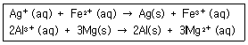
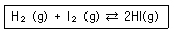
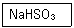
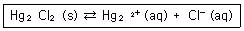
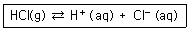
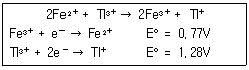
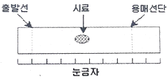
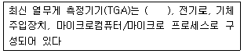
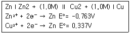

화학분석기사(구) (2017-09-23 기출문제)
1과목: 일반화학
1. 존재 가능한 다른 구조의 다이브로모벤젠(dibromobenzene)은 몇 가지 종류인가?
- 2
- 3
- 4
- 5
(정답률: 84%)

2. 화학식 C4H10O 로 존재할 수 있는 알코올의 구조이성질체는 몇 개인가?
- 3
- 4
- 5
- 7
(정답률: 60%)
3. 3.84몰(mol)의 Na2CO3이 완전히 녹아 있는 수용액에서 나트륨이온(Na+)의 몰(mol)수로 옳은 것은?
- 1.92mol
- 3.84mol
- 5.76mol
- 7.68mol
(정답률: 74%)
4. 222Rn 에 관한 내용 중 틀린 것은? (단, 222Rn 의 원자번호는 86 이다.)
- 양성자수 = 86
- 중성자수 = 134
- 전자수 = 86
- 질량수 = 222
(정답률: 89%)
5. 용해도에 대한 설명 중 틀린 것은?
- 일정 압력하에서 물 속에서 기체의 용해도는 온도가 증가함에 따라 증가한다.
- 액체 속 기체의 용해도는 기체의 부분압력에 비례한다.
- 탄산음료를 차갑게 해서 마시는 것은 기체의 용해도를 증가시키기 위함이다.
- 잠수부들이 잠수할 경우 받는 압력의 증가로 인해 혈액 속의 공기의 양은 증가한다.
(정답률: 71%)
6. 몰질량이 162g/mol 이며 백분율 질량 성분비가 탄소 74.0%, 수소 8.7%, 질소 17.3%인 화합물의 분자식은? (단, 탄소, 수소, 질소의 원자량은 각각 12.0amu, 수소 1.0amu, 14.0amu 이다.
- C11H16N
- C10H14N2
- C9H26N4
- C8H24N5
(정답률: 83%)
7. 슈크로오스(C12H22O11) 684g을 물에 녹여 전체 부피를 4.0L 로 만들었을 때 이 용액의 몰농도(M)는?
- 0.25
- 0.50
- 0.75
- 1.00
(정답률: 82%)
8. 암모니아 56.6g 에 들어있는 분자의 개수는? (단, N 원자량: 14.01g/mol, H 원자량: 1.008g/mol 이다.)
- 3.32×1023개 분자
- 17.03×1024개 분자
- 6.78×1023개 분자
- 2.00×1024개 분자
(정답률: 76%)
9. 용액 내의 Fe2+ 의 농도를 알기 위해 적정 실험을 하였는데, 이 과정에 대한 설명 중 옳은 것은?
- 농도가 알려진 NH4+ 용액으로 색이 자주빛으로 변할 때까지 철 용액에 한 방울씩 떨어뜨린다.
- 농도가 알려진 NH4+ 용액으로 색이 무색으로 변할 때 까지 철 용액에 한 방울씩 떨어뜨린다.
- 농도를 아는 MnO4- 용액으로 색이 자주빛으로 변할 때 까지 철 용액에 한 방울씩 떨어뜨린다.
- 농도를 아는 MnO4- 용액으로 색이 무색으로 변할 때 까지 철 용액에 한 방울씩 떨어뜨린다.
(정답률: 74%)
10. 다음 중 원자의 크기가 가장 작은 것은?
- K
- Li
- Na
- Cs
(정답률: 84%)
11. N 의 산화수가 +4 인 것은?(오류 신고가 접수된 문제입니다. 반드시 정답과 해설을 확인하시기 바랍니다.)
- HNO3
- NO2
- N2O
- NH4Cl
(정답률: 85%)
12. 용액의 조성을 기술하는 방법에 대한 설명 중 틀린 것은?
- 질량 퍼센트 : 용액 내에서 각 성분 물질의 질량 퍼센트로 정의한다.
- 몰농도 : 용액 1L 당 용질의 몰수로 정의한다.
- 몰랄농도 : 용매 1Kg 당 용질의 몰수로 정의한다.
- 몰분율 : 혼합물에서 한 성분의 몰분율이란 그 성분의 몰수를 해당 성분을 제외한 나머지 성분 전체의 몰수로 나눈 것이다.
(정답률: 84%)
13. 메탄 2.80g 에 들어 있는 메탄 분자수는 얼마인가?
- 1.⑤ x 1022 분자
- 1.⑤ x 1023 분자
- 1.93 x 1022 분자
- 1.93 x 1023 분자
(정답률: 80%)
14. 산과 염기에 대한 설명 중 틀린 것은?
- 산은 물에서 수소이온(H+)의 농도를 증가시키는 물질이다.
- 산과 염기가 반응하여 물과 염을 생성하는 반응을 중화반응이라고 한다.
- 염기성 용액에서는 H+ 의 농도보다 OH- 의 농도가 더 크다.
- 산성용액은 푸른 리트머스 시험지를 노랗게 변색시킨다.
(정답률: 87%)
15. 다음 반응이 일어난다고 할 때 산화되는 물질은?

- Ag+(aq), Al3+(aq)
- Fe2+(aq), Mg(s)
- Ag+(aq), Mg(s)
- Fe2+(aq), Al3+(aq)
(정답률: 84%)
16. 어떤 온도에서 다음 반응의 평형 상수 50 이다. 같은 온도에서 x몰의 H2(g)와 2.5몰의 I2(g)를 반응시켜 평형에 이르렀을 때 4몰의 HI(g) 가 되었고, 0.5몰의 I2(g)가 남아 있었다. x의 값은 얼마인가?

- 1.64
- 2.64
- 3.64
- 4.64
(정답률: 63%)
17. alkene 에 해당하는 것은?
- C6H14
- C6H12
- C6H10
- C6H6
(정답률: 79%)
18. 다음 무기화합물의 명칭에 해당하는 것은?

- 삼황산수소나트륨
- 황산수소나트륨
- 과황산수소나트륨
- 아황산수소나트륨
(정답률: 76%)
19. 0.40M NaOH와 0.10 H2SO4를 1 : 1 부피로 섞었을 때, 이 용액의 pH는 얼마인가?
- 10
- 11
- 12
- 13
(정답률: 53%)
20. 텔루륨(Te)과 요오드(I)의 이온화에너지와 전자친화도의 크기 비교를 옳게 나타낸 것은?
- 이온화에너지 : Te ＜ I, 전자친화도 : Te ＜ I
- 이온화에너지 : Te ＜ I, 전자친화도 : Te ＞ I
- 이온화에너지 : Te ＞ I, 전자친화도 : Te ＜ I
- 이온화에너지 : Te ＞ I, 전자친화도 : Te ＞ I
(정답률: 75%)
2과목: 분석화학
21. 부피 분석법인 적정법을 이용하여 정량 분석을 할 경우 다음 중 가장 옳은 설명은?
- 적정 실험에서 측정하고자 하는 당량점과 실험적인 종말점은 항상 일치한다.
- 적정 오차는 바탕 적정(blank titration)을 통해 보정할 수 있다.
- 역적정 실험 시에는 적정 시약(titrant)을 시료에 가하면서 지시약의 색이 바뀌는 부피를 직접 관찰한다.
- 무게 적정(gravimetric titration) 실험 시에는 적정 시약의 부피를 측정한다.
(정답률: 67%)
22. 다음 화학평형식에 대한 설명으로 틀린 것은?

- 이 반응을 나타내는 평형상수는 Ksp 라고 하며 용해도상수 또는 용해도곱상수라고도 한다.
- 이 용액에 Cl- 이온을 첨가하면 용해도는 감소한다.
- 온도를 증가시키면 Ksp 는 변한다.
- 이 용액에 Cl- 이온을 첨가하면 Ksp 는 감소한다.
(정답률: 58%)
23. 금속 킬레이트에 대한 설명으로 옳은 것은?
- 금속은 루이스(Lewis) 염기이다.
- 리간드는 루이스(Lewis) 산이다.
- 한 자리(monodentate) 리간드인 EDTA는 6개의 금속과 반응한다.
- 여러자리(multidentate) 리간드가 한 자리(monodentate) 리간드보다 금속과 강하게 결합한다.
(정답률: 63%)
24. H+와 OH-의 활동도계수는 이온세기가 0.⑤0M일 때는 각각 0.86 과 0.81 이었고, 이온세기가 0.10M 일 때는 각각 0.83 과 0.76 이었다. 25℃에서 0.10M KCl 수용액에서 H+의 활동도는?
- 1.00 x 10-7
- 1.⑤ x 10-7
- 1.10 x 10-7
- 1.15 x 10-7
(정답률: 53%)
25. Cd2+ 이온이 4분자의 암모니아(NH3!)와 반응하는 경우와 2분자의 에틸렌디아민(H2NCH2CH2NH2)과 반응하는 경우에 대한 설명으로 옳은 것은?
- 엔탈피 변화는 두 경우 모두 비슷하다.
- 엔트로피 변화는 두 경우 모두 비슷하다.
- 자유에너지 변화는 두 경우 모두 비슷하다.
- 암모니아와 반응하는 경우가 더 안정한 금속착물을 형성한다.
(정답률: 60%)
26. 다음 중 가장 센 산화력을 가진 산화제는? (단, E° 는 표준환원전위이다.)
- 세륨 이온(Ce4+), E° = 1.44V
- 크롬산 이온(CrO42-), E° = -0.12V
- 과망간산 이온(MnO4-), E° = 1.507V
- 중크롬산 이온(Cr2O72-), E° = 1.36V
(정답률: 76%)
27. 산화환원 적정에서 과망간산칼륨(KMnO4)은 산화제로 작용하며 센 산성 용액(pH 1 이하)에서 다음과 같은 반응이 일어난다. MnO4-+8H++5e- ⇄ Mn2++4H2O E°=1.507V 과망간산칼륨을 산화제로 사용하는 산화환원 적정에서 종말점을 구하기 위한 지시약으로서 가장 적절한 것은?
- 페로인
- 메틸렌 블루
- 과망간산칼륨
- 다이페닐아민 설폰산
(정답률: 70%)
28. EDTA 적정의 종말점을 검출하기 위한 방법이 아닌 것은?
- 금속이온 지시약
- 유리전극
- 이온선택성 전극
- 가리움제
(정답률: 68%)
29. Fe2+이온을 Ce4+로 적정하는 반응에 대한 설명을 틀린 것은?(오류 신고가 접수된 문제입니다. 반드시 정답과 해설을 확인하시기 바랍니다.)
- 적정반응은 Ce4++Fe2+→Ce3++Fe3+ 이다.
- 전위차법을 이용한 적정에서는 반당량점에서의 전위는 당량점의 전위(Ve)의 약 1/2 이다.
- 당량점에서 [Ce3+]=[Fe3+], [Fe2+]=[Ce4+] 이다.
- 당량점 부근에서 측정된 전위의 변화는 미세하여 정확한 측정을 위해 산화-환원지시약을 사용해야 한다.
(정답률: 47%)
30. 난용성 고체염인 BaSO4로 포화된 수용액에 대한 설명으로 틀린 것은?
- BaSO4 포화수용액에 황산 용액을 넣으면 BaSO4 가 석출된다.
- BaSO4 포화수용액에 소금물을 첨가 시에도 BaSO4 가 석출된다.
- BaSO4 의 Ksp 는 온도의 함수이다.
- BaSO4 포화수용액에 BaCl2 용액을 넣으면 BaSO4 가 석출된다.
(정답률: 75%)
31. 산(acid)에 대한 일반적인 설명으로 옳은 것은?
- 알코올은 산성용액으로 알코올의 특징을 나타내는 OH의 H가 쉽게 해리된다.
- 페놀은 중성용액으로 OH의 H는 해리되지 않는다.
- 물 속에서 H+는 H3O+로 존재한다.
- 디에틸에테르는 산성 용액으로 H가 쉽게 해리된다.
(정답률: 78%)
32. 무게분석을 위하여 침전된 옥살산칼슘(CaC2O4)을 무게를 아는 거름도가니로 침전물을 거르고, 건조시킨 다음 붉은 불꽃으로 강열한다면 도가니에 남는 고체성분은 무엇인가?
- CaC2O4
- CaCO2
- CaO
- Ca
(정답률: 71%)
33. 전하를 띠지 않는 중성분자들은 이온세기가 0.1M 보다 작을 경우 활동도 계수(activity coefficient)를 얼마라고 할 수 있는가?
- 0
- 0.1
- 0.5
- 1
(정답률: 79%)
34. 뉴스에서 A제과회사의 과자에서 발암물질로 알려진 아플라톡신이 기준치 10ppb 보다 높은 14ppb가 검출돼 전량 폐기했다고 밝혔다. 이 과자 1kg에서 몇 mg의 아플라톡신이 검출되었는가?
- 14g
- 1.4mg
- 0.14mg
- 0.014mg
(정답률: 73%)
35. 다음 반응에서 ΔH° = -75.2kJ/mol, ΔS° = -132J/K·mol 일 때의 설명으로 옳은 것은?(단, ΔH° 와 ΔS° 각각 표준엔탈피 변화와 표준엔트로피 변화를 의미하며 온도에 관계없이 일정하다고 가정한다.

- 특정 온도보다 낮은 온도에서 자발적으로 진행될 가능성이 크다.
- 특정 온도보다 높은 온도에서 자발적으로 진행될 가능성이 크다.
- 온도와 관계없이 항상 자발적으로 일어난다.
- 온도에 관계없이 자발적으로 일어나지 않는다.
(정답률: 57%)
36. 전지의 두 전극에서 반응이 자발적으로 진행되려는 경향을 갖고 있어 외부 도체를 통하여 산화전극에서 환원전극으로 전자가 흐르는 전지 즉, 자발적인 화학반응으로부터 전기를 발생시키는 전지를 무슨 전지라 하는가?
- 전해 전지
- 표준 전지
- 자발 전지
- 갈바니 전지
(정답률: 83%)
37. 0.1M 의 Fe2+ 50mL를 0.1M 의 Tl3+ 로 적정한다. 반응식과 각각의 표준환원전위가 다음과 같을 때 당량점에서 전위(V)는 얼마인가?

- 0.94
- 1.02
- 1.11
- 1.20
(정답률: 46%)
38. 녹말과 같은 고유 지시약을 제외한 일반 산화환원 지시약의 색깔 변화에 대한 설명으로 가장 옳은 것은?
- 산화환원 적정 과정에서 적정곡선의 모양이 거의 수직 상승하는 범위에 의존한다.
- 산화환원 적정에 참여하는 분석물과 적정시약의 화학적 성질에 의존한다.
- 산화환원 적정 과정에서 생기는 계의 전극 전위의 변화에 의존한다.
- 산화환원 적정 과정에 변하는 용액의 pH 변화에 의존한다.
(정답률: 41%)
39. 25℃에서 0.028M 의 NaCN 수용액의 pH 는 얼마인가? (단, HCN 의 Ka = 4.9×10-10이다.)
- 10.9
- 9.3
- 3.1
- 2.8
(정답률: 43%)
40. 초산(CH3COOH) 6g을 물에 용해하여 500mL용액을 만들었다. 이 용액의 몰농도(mol/L)는 얼마인가? (단, 초산의 분자량은 60g/mol 이다.)
- 0.1M
- 0.2M
- 0.5M
- 1.0M
(정답률: 75%)
3과목: 기기분석I
41. 원자스펙트럼의 선넓힘을 일으키는 요인으로 가장 거리가 먼 것은?
- 온도
- 압력
- 자기장
- 에너지준위
(정답률: 57%)
42. 원자분광법에서 원자선 나비가 중요한 주된 이유는?(오류 신고가 접수된 문제입니다. 반드시 정답과 해설을 확인하시기 바랍니다.)
- 원자들이 검출기로부터 멀어져 발생되는 복사선 파장의 증폭을 방지할 수 있다.
- 다른 원자나 이온과의 충돌로 인한 에너지준위의 변화를 막을 수 있다.
- 원자의 전이 시간의 차이로 발생되는 선 좁힘 현상을 제거할 수 있다.
- 스펙트럼선이 겹쳐서 생기게 되는 분석방해를 방지할 수 있다.
(정답률: 67%)
43. 230nm 빛을 방출하기 위하여 사용되는 광원으로 가장 적절한 것은?
- tungsten lamp
- deuterium lamp
- nernst glower
- globar
(정답률: 54%)
44. IR spectrophotometer 에 일반적으로 가장 많이 사용되는 파수의 단위는?
- nm
- Hz
- cm-1
- rad
(정답률: 78%)
45. 적외선 흠수분광기의 시료용기에 사용할 수 있는 재질로 가장 적합한 것은?
- 유리
- 소금
- 석영
- 사파이어
(정답률: 54%)
46. 원자분광법에서 시료도입 방법에 따른 시료형태로서 틀린 것은?
- 직접주입 - 고체
- 기체 분무화 - 용액
- 초음파 분무화 - 고체
- 글로우 방전 튀김 - 전도성 고체
(정답률: 69%)
47. UV-B를 차단하기 위한 햇볕차단제의 흡수 스펙트럼으로부터 280nm 부근의 흡광도가 0.38이었다면 투과되는 자외선 분율은?
- 42%
- 58%
- 65%
- 73%
(정답률: 67%)
48. 530nm 파장을 갖는 빛의 에너지보다 3배 큰 에너지의 빛의 파장은 약 얼마인가?
- 177nm
- 226nm
- 590nm
- 1590nm
(정답률: 78%)
49. 원적외선 영역의 파장(㎛) 범위는?
- 0.78 ~ 2.5
- 2.5 ~ 15
- 2.5 ~ 50
- 50 ~ 1000
(정답률: 47%)
50. 원자흡수 분광법에서 스펙트럼 방해를 제거하는 방법이 아닌 것은?
- 연속광원보정
- 보호제를 이용한 보정
- Zeeman효과 이용한 보정
- 광원자체반전에 의한 보정
(정답률: 56%)
51. Beer의 법칙에 대한 실질적인 한계를 나타내는 항목이 아닌 것은?
- 단색의 복사선
- 매질의 굴절률
- 전해질의 해리
- 큰 농도에서 분자간의 상호작용
(정답률: 50%)
52. 적외선흡수분광법에서 적외선을 가장 잘 흡수할 수 있는 화학종은?
- O2
- HCl
- N2
- Cl2
(정답률: 70%)
53. IR을 흡수하려면 분자는 어떤 특성을 가지고 있어야 하는가?
- 분자구조가 사면체이면 된다.
- 공명구조를 가지고 있으면 된다.
- 분자 내에 π결합이 있으면 된다.
- 분자 내에서 쌍극자 모멘트의 변화가 있으면 된다.
(정답률: 80%)
54. 분산형 적외선(dispersive IR) 분광기와 비교할 때, Fourier 변환 적외선(FTIR) 분광기에서 사용되지 않는 장치는?
- 검출기(detector)
- 광원(light source)
- 간섭계(interferometer)
- 단색화장치(monochromator)
(정답률: 67%)
55. 원자 X선 분광법에 이용되는 X선 신호변환기 중 기체충전변환기에 속하지 않는 것은?
- 증강 계수기
- 이온화 계수기
- 비례 계수기
- Geiger 관
(정답률: 39%)
56. 양성자의 자기 모멘트 배열을 반대방향으로 변화시키는데 100MHz 의 라디오 주파수가 필요하다면 양성자 NMR 의 자석의 세기는 약 몇 T 인가? (단, 양성자의 자기회전비율은 3.0x108T-1s-1이다.)
- 2.1
- 4.1
- 13.1
- 23.1
(정답률: 42%)
57. NMR기기에서 자석은 자기장과 관련이 있으므로 중요한 부품이다. 감도와 분해능이 자석의 세기와 질에 따라서 달라지므로 자장의세기를 정밀하게 조절하는 것이 중요하다. 다음중 NMR기기에서 사용되는 초전도자석 장치의 특징이 아닌 것은?
- 자기장의 균일하고 재현성이 높다.
- 초전도자석의 자기장이 일반 전자석보다 세다.
- 전자석보다 복잡한 구조로 되어 있으므로 작동비가 많이 든다.
- 초전도성을 유지하기 위해서 Nb/Sn 이나 Nb/Ti 합금선으로 감은 솔레노이드를 사용한다.
(정답률: 66%)
58. 공장 인근의 해수에는 약 10mg/L 정도의 납(Pb)을 함유하고 있다. 유도결합플라스마방출분광법(ICP-AES)으로 해수 시료를 분석하고자 할 때 가장 적절한 분석 방법은?
- ICP-AES 로 분석하기 좋은 농도 법위이므로 전처리하지 않고 직접 분석한다.
- 해수에 염산(HCl)을 가하여 증발·농축시킨 후 질산으로 유기물을 분해시켜 ICP-AES 로 분석한다.
- 해수 중의 유기물을 질산(HNO3)으로 분해시키고 NaCl(소금)매트릭스로부터 납(Pb)을 분리 후 분석한다.
- 해수 중에는 NaCl 이 3% 정도 함유되어 있지만 Pb를 정량하는데 거의 영향을 주지 않으므로 유기물을 황산으로 분해시킨 후 직접 분석한다.
(정답률: 72%)
59. 핵자기공명 분광학에서 이용하는 파장은?
- 적외선
- 자외선
- 라디오파
- microwave(마이크로웨이브)
(정답률: 66%)
60. 나트륨은 589nm 와 589.6nm에서 강한 스펙트럼띠(선)를 나타낸다. 두 선을 구분하기 위해 필요한 분해능은?
- 0.6
- 491.2
- 589.3
- 982.2
(정답률: 74%)
4과목: 기기분석II
61. 다음 [그림]은 어떤 시료의 얇은 층 크로마토그램이다. 이 시료의 지연인자(retardation factor) Rf 값은?

- 0.10
- 0.20
- 0.30
- 0.50
(정답률: 79%)
62. 질량분석기에서 사용하는 시료도입장치가 아닌 것은?
- 직접 도입장치
- 배치식 도입장치
- 펠렛식 도입장치
- 크로마토그래피 도입장치
(정답률: 58%)
63. 원자질량분석장치 중에서 가장 상업화가 많이 되어 쓰이는 것은 ICP-MS이다. 이들 장치에 대한 설명으로 가장 바르게 설명한 것은?
- Ar을 이용한 사중극자 ICP-MS에서는 Fe, Se 등의 주 동위원소들이 간섭 없이 고감도로 측정이 잘된다.
- ICP와 결합된 Sector 질량분석장치는 고분해능이면서, Photon baffle이 필요 없어 고감도 기능을 유지한다.
- Ar 플라즈마는 고온이므로 모두 완전히 분해되어 측정되므로 OH2+등의 polyatomic 이온에 의한 간섭이 없다.
- Ar ICP는 고온의 플라스마이므로, F 등의 할로겐 원소들도 완전히 이온화시켜 측정할 수 있다.
(정답률: 45%)
64. 갈바니전지에서 전류가 흐를 때 전위가 달라지는 요인으로 가장 거리가 먼 것은?
- 저항 전위
- 압력 과전압
- 농도편극 과전압
- 전하이동편극 과전압
(정답률: 61%)
65. 초미립 세라믹 분말이나, 세라믹 분말로 만들어진 소재 및 부품들에 존재하는 금속원소들을 분석 시, 시료를 단일 산이나, 혼합 산으로 녹일 때 잘 녹지 않는 시료들이 많다. 이러한 경우네 시료를 전처리 없이 직접원자화 장치에 도입할 수 있는 방법은 여러 가지가 있다. 다음 중 고체 분말이나, 시편을 녹이지 않고 직접 도입하는 방법이 아닌 것은?
- 전열 가열법
- 레이저 증발법
- fritted disk 분무법
- 글로우방전법
(정답률: 50%)
66. 일반적으로 사용되는 기체크로마토그래피의 검출기 중 보편적으로 사용되는 검출기가 아닌 것은?
- Refractive index detector(RI)
- Flame ionization detector(FID)
- Electron capture detector(ECD)
- Thermal conductivity detector(TCD)
(정답률: 65%)
67. 액체크로마토그래피에 쓰이는 다음 용매 중 극성이 가장 큰 용매는?
- 물(water)
- 톨루엔(toluene)
- 메탄올(metanol)
- 아세토나이트릴(acetonitrile)
(정답률: 70%)
68. 질량분석기의 이온화장치(ionization source)중 시료 분자 및 이온의 부서짐 및 토막내기(fragmentation)가 가장 많이 일어나는 것은?
- 장 이온화(field ionization)
- 화학 이온화(chemical ionization)
- 전자충격 이온화(electron impact ionization)
- 기질 보조 레이저 탈착 이온화(matrix-assisted laser desorption ionization)
(정답률: 85%)
69. 폴리에틸렌에 포함된 카본블랙을 정량하고자 한다. 가장 알맞은 열분석법은?
- TGA
- DSC
- DTA
- TMA
(정답률: 66%)
70. 다음 ( )안에 알맞은 용어는?

- 시린저
- 검출기
- 정교하게 제작된 온도계
- 감도가 매우 좋은 분석저울
(정답률: 82%)
71. GLC에 사용되는 고체지지 물질(solid support)의 조건으로 적합하지 않은 것은?
- 단단해서 쉽게 깨지지 않아야 한다.
- 입자 모양과 크기가 불균일하여야 한다.
- 단위체적당 큰 비표면적을 가져야 한다.
- 액체 정지상을 쉽고 균일하게 도포할 수 있어야 한다.
(정답률: 82%)
72. 다음 전지의 전위는?

- -1.10V
- -0.427V
- 0.427V
- 1.10V
(정답률: 67%)
73. 전기분석법이 다른 분석법에 비하여 갖고 있는 특징에 대하여 설명한 것 중 옳지 않은 것은?
- 기기장치가 비교적 저렴하다.
- 복잡한 시료에 대한 선택성이 있다.
- 화학종의 농도보다 활동도에 대한 정보를 제공한다.
- 전기화학측정법은 한 원소의 특정 산화상태에 따라 측정된다.
(정답률: 32%)
74. 다음 중 기준전극으로 주로 사용되는 전극은?
- Cu/Cu2+전극
- Ag/AgCl 전극
- Cd/Cd2+전극
- Zn/Zn2+전극
(정답률: 76%)
75. 순환 전압-전류법(Cyclic voltammetry)에 대한 설명으로 틀린 것은?
- 두 전극 사이에 정주사(forward scan) 방향으로 전위를 걸다가 역주사(Reverse scan)방향으로 원점까지 전위를 낮춘다.
- 작업전극의 표면적이 같다면, 전류의 크기는 펄스차이 폴라로그래피 전류와 거의 같다.
- 가역반응에서는 양극봉우리 전류와 음극봉우리 전류가 거의 같다.
- 가역반응에서는 양극봉우리 전위와 음극봉우리 전위의 차이는 0.⑤92/n volt 이다.
(정답률: 54%)
76. 액체크로마토그래피에서 주로 이용되는 기울기용리(gradient elution)에 대한 설명으로 틀린 것은?
- 용매의 혼합비를 분석 시 연속적으로 변화시킬 수 있다.
- 분리시간을 크게 단축시킬 수 있다.
- 극성이 다른 용매는 사용 할 수 없다.
- 기체크로마토그래피의 온도변화 분석과 유사하다.
(정답률: 79%)
77. 질량분석계의 질량분석 장치를 이용하는 방법에 해당되지 않는 분석기는?
- 원도 질량 분석기
- 사중극자 질량 분석기
- 이중 초정 질량 분석기
- 자기장 부채꼴 질량 분석기
(정답률: 71%)
78. 아주 큰 분자량을 갖는 극성 생화학 고분자의 분자량에 대한 정보를 알 수 있는 가장 유용한 이온화법은?
- 장이온화(FI)
- 화학이온화(CI)
- 전자충격이온화(EI)
- 매트릭스지원 탈착 이온화(MALDI)
(정답률: 68%)
79. 이온교환 크로마토그래피를 이용하여 음이온, 할로겐화물, 알칼로이드, 비타민 B 복합물 및 지방산을 분리하는데 가정 적절한 이온-교환 수지는?
- 강산성 양이온 - 교환수지
- 약산성 양이온 - 교환수지
- 강염기성 음이온 - 교환수지
- 약염기성 음이온 - 교환수지
(정답률: 52%)
80. 2.00mmol 의 전자가 2.00V 의 전위차를 가진 전지를 통하여 이동할 때 행한 전기적인 일의 크기는 약 몇 J 인가? (단, Faraday 상수는 96500C/mol 이다.)
- 193J
- 386J
- 483J
- 965J
(정답률: 63%)